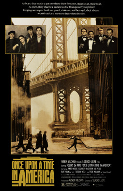

Sergio Leone
1984
229 minutes
TITLE: Once Upon a Time in America TEXT PLACEHOLDER 113
This film should be a lot more fun than it is. Sergio Leone. Music by Ennio Morricone. It's got DeNiro in it. Joe Pesci. Treat Williams even. James Woods before he was completely intolerable.
Warning sign number one is that it is nearly four hours, which is a pretty major commitment. Still, how can you go wrong with this cast of superstars.
By the end of this you are about to gnaw your own leg off. It is simply endless and formless and bleak. It has a few good moments. But it is long and interminable and you never really like anyone.
The dessert the kid innocently eats instead of trading it to try to get in a girl's pants is moving, and the soundtrack cues associated with this are kind of beautiful. You're surprised this isn't a more beloved moment by film critics. Other than that you just end up weary and sad when this film wraps around to its miserable close.
What makes matters worse is that there are some very good films with names that are almost this. You love Once Upon a Time in the West and you were very pleasantly surprised by Once Upon a Time in Hollywood. When you try to complain about this film, people will think you're an idiot and silently judge you or they will start to argue with you and defend the film they think you're attacking and you'll end up with enough friction to cause trouble before you find out you're talking about different films.
Spaghetti Westerns pair well with a fake nostalgic American West. There seems to be a reason Spaghetti Easterns aren't a thing. This film bodes ominous for what is in your future. Check your horoscope before going to future films for a few days.
Time to choose something different: